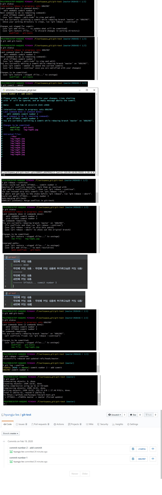

현재 상황 : local 저장소의 내용이 remote 저장소에도 올라가있는 상태
그럼에도 불구하고 commit 기록을 변경하고 싶을 때
물론 이때 주변 작업자들에게 확인해야됨
git log --oneline
명령어로 commit 기록을 변경하고 싶은 커밋번호 확인
git rebase -i <해당커밋번호>
위 명령어를 통해 커밋기록을 변경하고 싶은 부분의 '직전' 커밋 번호를 선택

git push (저장소이름) (브랜치이름) -f
위와 같이 저장소 이름과 브랜치 이름을 명확히 명시해주는 습관을 들이는 것이 좋을듯
위에서 층돌난 이유는 2번째 커밋기록(메시지, 내용)을 변경할 때,
3번째 커밋기록과 충돌났기 때문에,
해당 충돌 부분을 해결하고 rebase를 진행하면, 충돌난 부분들의 커밋이 내가 변경하고 있는 커밋에 흡수됨
즉, 내가 변경하고자 하는 커밋 기록의 내용이 그 다음 커밋기록들과 충돌나지 않는 부분들을 수정해야
충돌 안나고 원하는대로 수정할 수 있음